How it works
Training
LightGBM and silvic both recover a sibling histogram by subtracting a built child’s histogram from its parent’s. LightGBM defaults to separate floating-point gradient and hessian sums. silvic’s CPU path quantizes and packs each pair into an integer, so one addition updates both sums in a bin. This reduces bin-update work; the training benchmark also includes binning, fitting and validation.

Serving
lleaves compiles code for each model. silvic uses shared CPU SIMD kernels: one threshold rank covers several splits, while masks remove unreachable leaves across rows. The kernel finds the surviving leaf positions with SIMD and reads their values per lane. This reduces prediction work. The serving benchmark excludes compilation.
